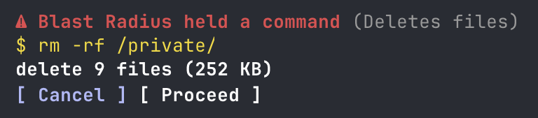

blast-radius
Holds risky Bash commands and shows what they would change before they run.

Install
claude plugin marketplace add hamzafer/claude-code-mods
claude plugin install blast-radius@claude-code-modsRestart Claude Code after installing. To try it without installing, clone the repo and run claude --plugin-dir mods/blast-radius.
How to use
Cancel / Proceed- Refuse the command, or run it as written
timeoutSeconds- How long to wait before it cancels (default 60, 0 waits forever). Change it in /config
How it behaves
- Holds rm -r, git push --force and migrations (prisma, supabase, drizzle-kit, rails, alembic).
- Lists the files and size an rm would delete. A path with a shell variable other than ~ or $HOME shows "can't preview" instead of a guess.
- Lists the remote commits a force push would drop.
- No answer in 60 s cancels the command. Claude gets the reason, so an unattended session keeps going. It never runs the command on its own.
- With no screen attached (a plain claude -p run), it cancels at once.
- One command is held at a time. A second one waits its turn, then gets its own full countdown.